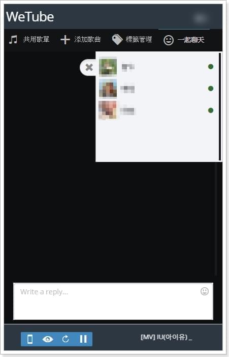
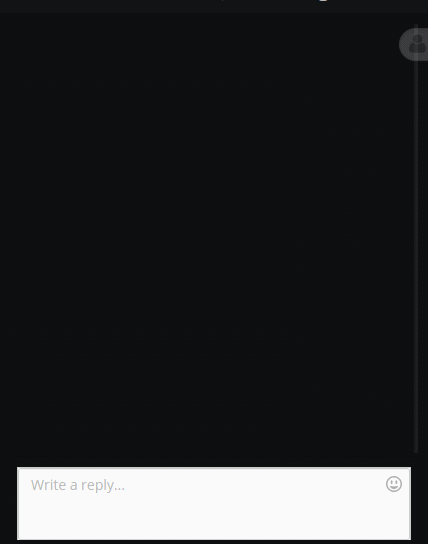
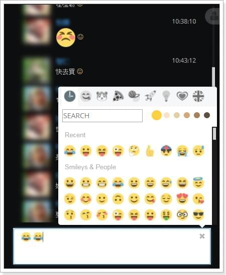
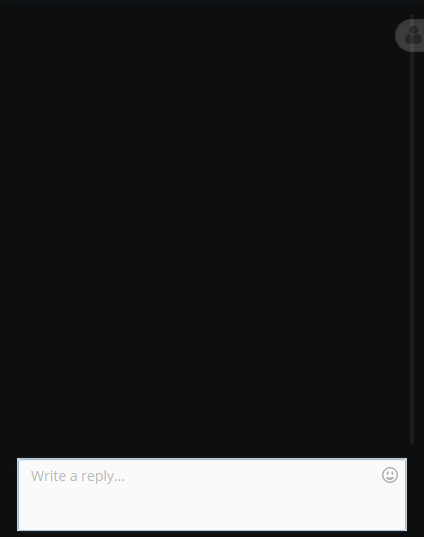
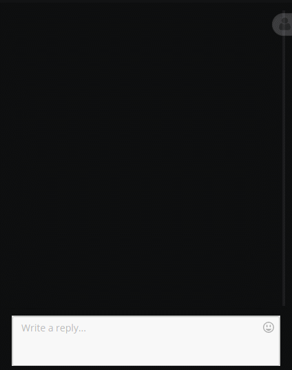
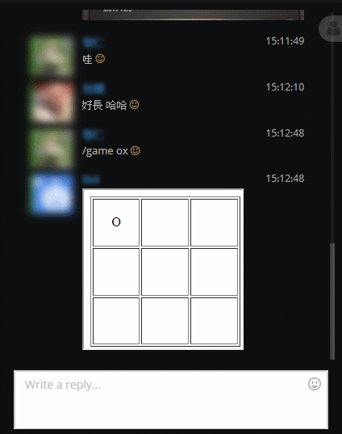
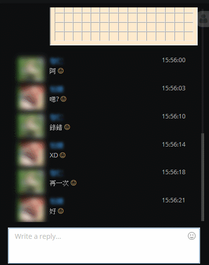
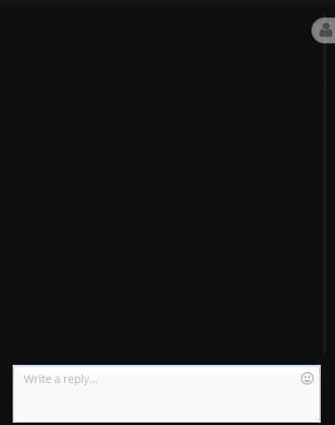

聊天室用著用著總是能夠發現不足的地方，如果連身為開發者的自己都覺得難用那簡直是一種恥辱，這篇文章就記錄一些自我改進的地方與如何用現成套件來幫助解決這些問題。
顯示正在聊天室的使用者
只要使用上一篇文章提到的SignalR，偵測連接事件，這樣就可以即時顯示連線中的使用者。

模糊處理
前些時候為了方便文章截圖，我還特別建置了一個測試環境來避免洩漏個資，現在直接用Css寫了模糊效果，並用JS開關來保護機敏資料；轉念一想，偶爾開啟這個功能，讓聊天室的使用者不知道彼此是誰，這樣聊起來也是別有一番趣味。
對話挑出連結並進行轉換
輸入的對話若出現了連結，總不可能叫使用者自己複製去瀏覽器貼來看。所以就用正規式把連結挑出來，然後使用<a href=""></a>替換原文，這樣連結就好讀、好點多了對吧。
讓聊天室捲軸至底
隨著對話紀錄往下增長，捲軸也會面臨幾個問題，譬如說正在往上觀看聊天紀錄的人不應該因為新的紀錄而被至底，只有正在至底的人才會被新紀錄至底…等等，實際上做起來並不是那麼容易，但好在找到了一個外掛解決了這個問題「angularjs-scroll-gule」。

新訊息提示
使用者當然不會保持聊天室的視窗至頂，那有新訊息時就用「Chrome Notifications Api」來通知使用者吧，這樣就可以簡單做到螢幕右下角彈出訊息視窗了。
顯示Emoji
聊天室必不可少的東西，可以有效幫助氣氛更活絡、語氣更生動，還好也是有套件「EmojiOne Area」可以快速使用，相似的套件我挑了很久，還是最喜歡這款。

句尾顯示笑臉
都說笑容會感染，雖然不知文字有沒有同樣的效果，但或多或少應該可以修飾一下語氣吧？
傳送圖片
檔案上傳真的是不太好做，但如果只是讓使用者貼個圖片連結那還是可以的。

傳送影片
同傳送圖片。

圈圈叉叉
簡單的連線遊戲也可以使用iFrame+SignalR做到。

五子棋
同圈圈叉叉。

隨機產生一些提神(?)的圖片
到底產生了什麼，真的不方BANG多縮，應同仁要求加入了點擊解除模糊的事件。

結語
暫時只做了這些，還有很多改進空間，嗯…只能繼續努力。